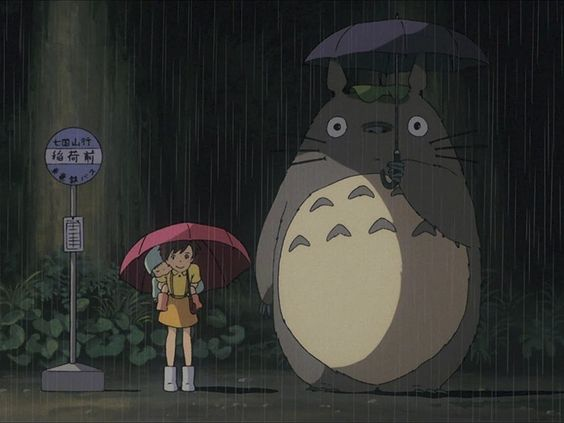

My Gallery Page
Castle in the Sky
Set in a fictional late 19th century, it follows the adventures of a boy and girl who are trying to keep a powerful crystal from the army, a group of secret agents, and a family of pirates, while searching for a legendary floating castle.

Howl's Moving Castle
Set in a fictional kingdom where both magic and early twentieth-century technology are prevalent, against the backdrop of a war with another kingdom. It tells the story of Sophie, a young milliner who is turned into an elderly woman by a witch who enters her shop and curses her.

Spirited Away
Tells the story of Chihiro Ogino, a ten-year-old girl who, while moving to a new neighborhood, enters the world of Kami (spirits of Japanese Shinto folklore). After her parents are turned into pigs by the witch Yubaba, Chihiro takes a job working in Yubaba's bathhouse to find a way to free herself and her parents and return to the human world.

My Neighbor Totoro
Tells the story of a professor's young daughters Satsuki and Mei, and their interactions with friendly wood spirits in postwar rural Japan.
Whisper of the Heart
Shizuku Tsukishima is a 14-year-old student at Mukaihara Junior High School, where she is best friends with Yūko Harada. She lives in Tokyo with her parents Asako and Seiya and older sister Shiho, and is keen on creative writing. One evening, she looks through the checkout cards in her library books and discovers they were all checked out previously by someone named Seiji Amasawa.